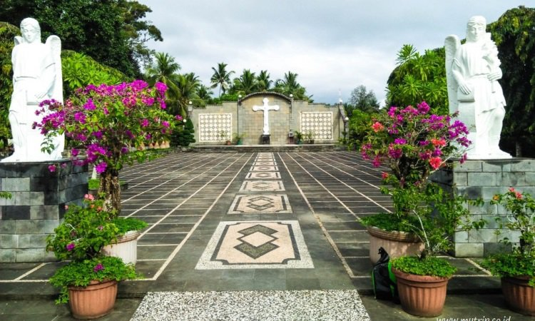
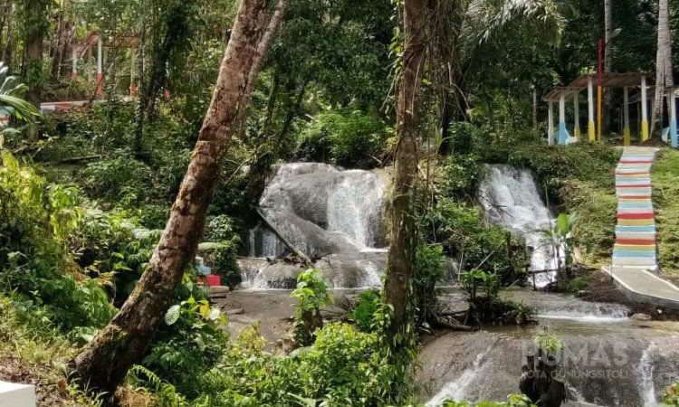

Kota Gunungsitoli
Taman Doa Bunda Maria
Image Credit: Mytrip.co.id
Bagi Anda umat kristiani yang tidak ingin pergi hanya sekedar berwisata tapi juga bisa menjadi
ibadah, maka Anda bisa
berkunjung ke Taman Doa Bunda Maria. Anda bisa bercerita apapun kepada sang maha pencipta di lokasi
yang satu ini.
Tempat ini memang sering dijadikan untuk tempat berdoa dan sangat tepat untuk Anda yang ingin
menenangkan diri.
Tidak ada salahnya jika Anda menjajal untuk berdoa di taman doa bunda
maria. Dan yang unik dari tempat ini adalah Anda
bisa mendengar gaungan suara Anda. Terasa seperti berada di dalam gua bukan? Tempat yang satu ini
juga terdapat berbagai
patung rohani loh.
Lokasi
Lokasi:Jl. Raya Pelud Binaka No.KM. 6,5, Fodo, Gunungsitoli Selatan, Kab. Gunungsitoli.
Air Terjun Humogo
Image Credit:Gunungsitolikota.go.id
Bagi Anda yang malas mengunjungi pantai, Anda bisa menjajal berkunjung ke Air Terjun Humogo. Anda bukan hanya merasakan ketenangan namun perasaan lebih dekat dengan alam. Ditambah lagi suara air terjun dan segarnya mata airnya. Anda bisa melepas lelah selama perjalanan dengan berendam di air terjun yang satu ini. Bukan hanya itu, pemandangan alam disekitar Air Terjun Humogo juga sangat indah. Anda tidak akan kecewa karena telah mengunjunginya.
Lokasi
Lokasi: Jl. Tola Maera, Desa Fadoro, Dahana, Gunungsitoli Idanoi, Kab. Gunungsitoli.